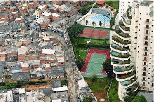

1) Analisando as figuras acima e o que você aprendeu no roteiro, cite pelo menos 2 características do espaço urbano e outras 2 do espaço rural.
2) A principal função de um município pode ser o turismo, o comércio, a criação de animais, o trabalho industrial entre outras atividades. Hoje em dia, quais são as principais funções do município de São Paulo?
3) Na época que São Paulo era apenas uma vila, um espaço rural, qual você acredita que era sua principal função?
4) O que é uma metrópole?
Dentro de uma mesma cidade, as paisagens podem ser bem diferentes. Podemos observar essas diferenças na qualidade e na existência de serviços públicos como: água tratada e encanada, coleta e tratamento de esgoto, coleta de lixo e limpeza urbana, iluminação e pavimentação de ruas, entre outros. Essas realidades bem distintas, bem contrastantes podem ser observadas na imagem abaixo.

Após a leitura do texto e da imagem acima, responda as seguintes questões:
5) Por que você acha que essas diferenças existem?
Após a leitura do texto e da imagem acima, responda as seguintes questões:
5) Por que você acha que essas diferenças existem?
6) Como você acredita que essas diferenças foram constituídas?
7) De que maneira essas diferenças poderiam deixar de existir?